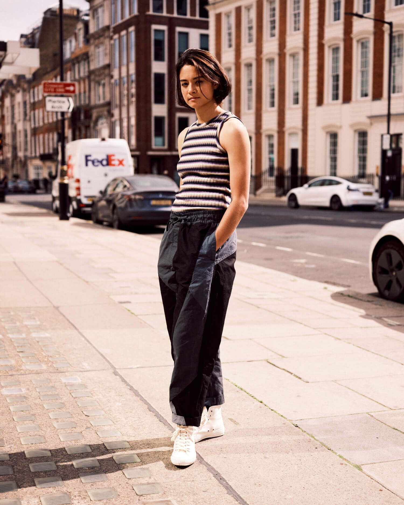

Mathilde Lin is a multidisciplinary dancer, choreographer and model, raised between France and China. After training at the Rudra Béjart school in Lausanne, Mathilde joined the IT Dansa company in Barcelona, followed by a season at Żfin, Malta’s national repertory company, dancing under the direction of Paolo Mangiola. Now based in London, Mathilde seems to be perpetually on tour with various companies, alongside teaching at dance school House of Mass and starring in Harry Styles’ music videos. We caught her on a rare day off to discuss her attitudes to work, life and comfortable dance clothes.
How did growing up between France and China inform your practice
and the way you see the world?
It was a unique and powerful experience, growing up between two countries. It shaped who I am today. It enabled me to adapt to new cultures and ways of living and thinking. I also think it made me less afraid of the unknown. I’m very grateful for it.
How would you describe your approach to dance and choreography?
I’m always experimenting, both as a dancer and when I make my own work. I like the challenge of learning new skills, getting out of my comfort zone and working with different teams. I try to surprise and reinvent myself constantly. For me, that’s where the fun lies.